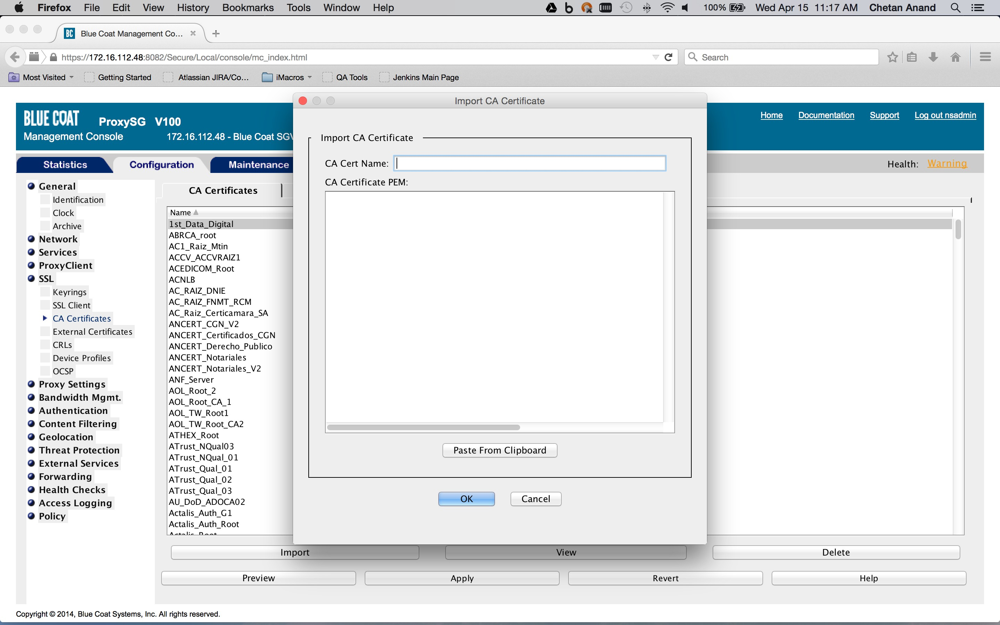
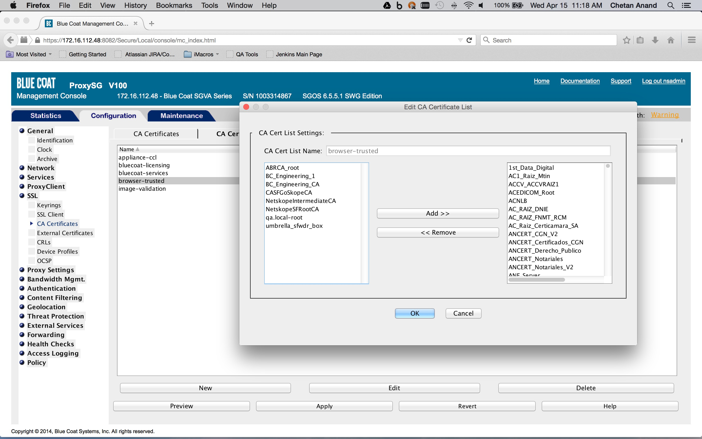
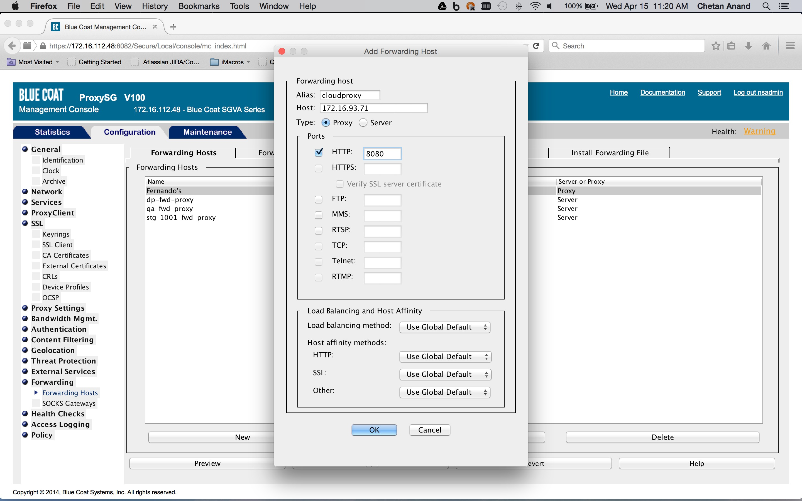
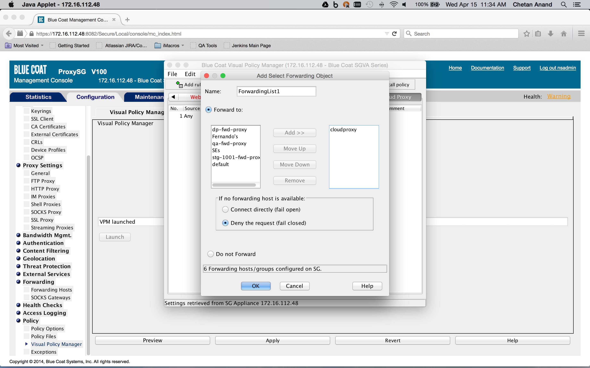

Configure Blue Coat for Proxy Chaining
This document describes how to configure Blue Coat ProxySG to forward traffic for SaaS apps to the Netskope cloud proxy.
Netskope’s Cloud proxy does not require configuration in the Netskope UI, but it is not enabled by default. Tenant-specific access control rules are in place to maintain the security of the solution. Please submit a Customer Support ticket so that we can enable it, and be prepared to provide the public IP addresses of the proxies in order to whitelist them. Traffic is not allowed from unknown sources.
Before starting, you need to get the Netskope Root and CA certificates, and also need to get the list of URLs to be used in Blue Coat to steer the managed apps. These items are available in the Netskope UI.
To get the Netskope certificates for importing into Blue Coat, go to Settings > Manage > Certificates > Signing CA. Scroll down where you can download the root and intermediate certificates (which are needed in step 1 below).
 |
To get the list of URLs, go to Settings > Security Cloud Platform > Steering Configuration and select a Steering Configuration to use. Select Desktop Domains on the Download Configuration dropdown list.
This generates the list of URLs for you to use in the Blue Coat configuration below (step 4).
Once you have these items, you are ready to configure Blue Coat for proxy chaining.
To configure Blue Coat:
Import the certificates from Netskope into the Blue Coat ProxySG CA certificate store (Configuration tab > SSL > CA Certificates > CA Certificates tab > Import).
 If applicable, import the appropriate CA certificate list. For example "browser-trusted" (Configuration tab > SSL > CA Certificates >CA Certificate List tab > Edit).
 Define the host and port for the upstream proxy that will act as the forwarding host. An example is shown below.(Configuration tab > Forwarding > Forwarding Hosts > Forwarding Hosts tab > New)). The proxy hostname should be
pxc-<tenant hostname>.goskope.com. This is the minimum required configuration. 
Create a category object in the Blue Coat ProxySG policies that defines the list of SaaS app domains for the traffic that must be forwarded (Configuration tab > Policy > Visual Policy Manager > Configuration > Edit categories ...).

Use the Desktop Domain list you got from the Netskope UI. As this managed list is modified, a new list needs to be added to the category object.
Create a Forwarding layer in the Blue Coat ProxySG policies and create a rule which sets the destination to a server URL category object encompassing the list of SaaS app domains obtained previously (Configuration tab > Policy > Visual Policy Manager > Forwarding layer tab), and right-click on the object in the Destination column corresponding to rule. Click on Set > New > Server URL Category.

The action is set to a forwarding object containing the forwarding host defined previously (Configuration tab > Policy > Visual Policy Manager > Forwarding layer tab). Right click on an object in the Action column corresponding to rule and click Set > New > Select Forwarding. The Service Column should be set to
ALL HTTPSsince we are only interested in HTTPS Saas traffic. If not already done, create a SSL Intercept layer in the Blue Coat ProxySG policies and create a rule to enable SSL interception (Configuration tab > Policy > Visual Policy Manager > SSL intercept layer tab). Right-click on an object in the Action column corresponding to a rule and click New > Enable SSL Interception. This layer is needed to insert the identity and IP address header in the request (this is described later on).


Create a Web Access layer in the Blue Coat ProxySG policies and create a rule containing a combined action object. The destination is set to a request URL category destination object containing the SaaS app domains defined previously in the category object (Configuration tab > Policy > Visual Policy Manager > Web access layer tab), and then right-click on the object in the Destination column corresponding to the rule (New > Request URL category).

The combined action object consists of two so-called control request header objects. One control request header object sets the X-Forwarded-For header to the client IP address and another control request object sets the X-Authenticated-User header to the authentication credentials. The Service column is set to the Health status of the forward chain proxy. This is to ensure that the headers are inserted only if the request is being forwarded to the Netskope Cloud proxy.


To create a Health Status object, click New and then select Health Status. Enter a Health Status name, and click OK.


Apply the policy.